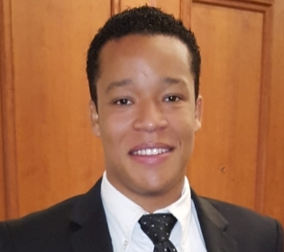

As an experienced professional in IT, I enjoy working with all aspects of technology. With a
Bachelor's
degree in Computer Information Systems from DeVry University, I have over 4 years of real-world
experience in building applications, networking, clients/servers, analysis and design, automation
scripting, database engineering, HTML/CSS/JavaScript, APIs and integrations. I enjoy working in
dynamic
Agile teams with different skill sets for quick delivery. From full stack development to hardware,
I
find that there is always an adventure and new discoveries waiting to be found.
Outside of the day to day tasks, I enjoy spending time with family and friends. Anything
outdoors
is my middle name as I love being out in nature. I also find great pleasure in volunteer work and
devoting time to the church.